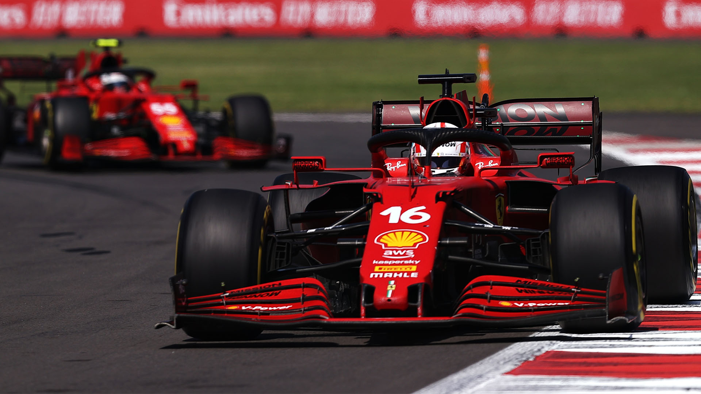

Íþróttir
Ég heft æft íþróttir síðan ég var 6 ára. Foreldarnir mínir skráðu mig þá í fimleika hjá Ármann. Eftir nokkur nokkur ár hætti ég að æfa hjá Ármanni og byrjaði hjá Fylki. Ég keppti á mörgum mótum. Þegar ég var 13 ára hætti ég í fimleikum því að það voru of margar æfingar.
Ég byrjaði þá að æfa Crossfit. Það gerðu líka tveir vinir mínir sem æfðu fimleika með mér. Eftir 2 ár hætti ég í Crossfitti ofg byrjaði að fara reglulega í ræktina einn eða með vinum. Það geri ég enn og fyrir tveimur vikum byrjaði ég að æfa box.
Fótbolti
Ég hef haft áhuga á fótbolta síðan 2016 þegar ég horfði á Evrópumótið í Frakklandi. Það var einn fótboltamaður sem mér líkaði sérstaklega við. Hann Antoine Griezmann. Griezmann er leikmaður frá Frakklandi sem þá spilaði hjá spænska liðinu Atletico Madrid. Ég byrjaði að horfa reglulega á leiki hjá Atletico, Frakklandi, og auðvitað landinu mínu, Póllandi. Ég byrjaði líka sjálfur að spila fótbolta úti með vinum eða pabba mínum. Ég spila ekki eins mikið núna en horfi samt á fótbolta Hér fyrir neðan er vídíó af FC Barcelona, liðinu sem ég held með núna:
Formúla 1
Ég byrjaði að horfa á Formúlu 1 2018 þegar ég hafði áhuga á bílum. Ég held með liðinu Ferrari því það var uppáhalds bílafyrirtækið mitt. Formúla 1 er ein þekktasta tegund kappaksturs í heiminum í dag. Mótaröðin fer fram á sumrin, hefst í mars og er tímabilið yfirleitt búið í desember. Formúla 1 er heimsmeistarakeppni og er sitjandi heimsmeistari Lewis Hamilton. Kostnaður við að keppa í Formúlu 1 er gríðarlegur og er Formúlu 1 bíl oft líkt við flugvél nema hún virki öfugt, þ.e. bílnum er þrýst niður en ekki upp. Hér fyrir neðan er mynd af Ferrari bílum að keyra:
Tónlist
Mér finnst gaman að hlusta á tónlist. Ég geri það til dæmis þegar ég er að læra, í strætó eða þegar ég er að taka til í herberginu mínu. Uppáhalds tegundin mín af tónlist er rapp, sérstaklega "drill". Uppáhalds söngvararnir mínir eru Pop Smoke, Drake og Migos. Einnig hlusta ég stundum á Pólskt rapp, oftast OIO sem er lið af þrem röppurum. Hér fyrir neðan er drill tónlist og eitt lag frá OIO á Pólsku:
© 2021 Szymon